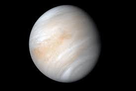
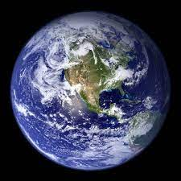
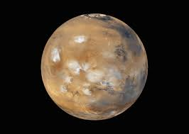
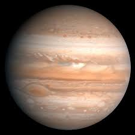
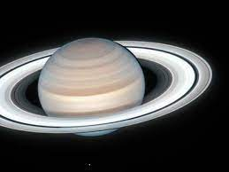
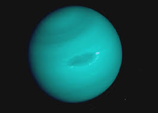

Los planetas son:
Mercurio
Mercurio es el planeta del sistema solar más cercano al Sol y el más pequeño. Forma parte de los denominados planetas interiores y carece de satélites naturales al igual que Venus. Se conocía muy poco sobre su superficie hasta que fue enviada la sonda planetaria Mariner 10 y se hicieron observaciones con radar y radiotelescopios.

Venus
Venus es el segundo planeta del sistema solar en orden de proximidad al Sol y el tercero en cuanto a tamaño en orden ascendente después de Mercurio y Marte. Al igual que Mercurio, carece de satélites naturales. Recibe su nombre en honor a Venus, la diosa romana del amor (en la Antigua Grecia, Afrodita). Al ser el segundo objeto natural más brillante después de la Luna, puede ser visto en un cielo nocturno despejado a simple vista.
Tierra
La Tierra (del latín Terra, deidad romana equivalente a Gea, diosa griega de la feminidad y la fecundidad) es un planeta del sistema solar que gira alrededor de su estrella —el Sol— en la tercera órbita más interna. Es el más denso y el quinto mayor de los ocho planetas del sistema solar. También es el mayor de los cuatro terrestres o rocosos.
Marte
Marte es el cuarto planeta en orden de distancia al Sol y el segundo más pequeño del sistema solar, después de Mercurio. Recibió su nombre en homenaje al dios de la guerra de la mitología romana (Ares en la mitología griega), y también es conocido como «el planeta rojo».
Júpiter
Júpiter es el planeta más grande del sistema solar y el quinto en orden de lejanía al Sol.3 Es un gigante gaseoso que forma parte de los denominados planetas exteriores. Recibe su nombre del dios romano Júpiter (Zeus en la mitología griega).
Saturno
Saturno es el sexto planeta del sistema solar contando desde el Sol, el segundo en tamaño y masa después de Júpiter y el único con un sistema de anillos visible desde la Tierra. Su nombre proviene del dios romano Saturno. Forma parte de los denominados planetas exteriores o gaseosos.
Urano
Urano es el séptimo planeta del sistema solar, el tercero de mayor tamaño, y el cuarto más masivo. Se llama así en honor de la divinidad griega del cielo Urano (del griego antiguo Οὐρανός), el padre de Crono (Saturno) y el abuelo de Zeus (Júpiter).
Neptuno
Neptuno es el octavo planeta en distancia respecto al Sol y el más lejano del sistema solar. Forma parte de los denominados planetas exteriores, y dentro de estos, es uno de los gigantes helados, y es el primero que fue descubierto gracias a predicciones matemáticas.